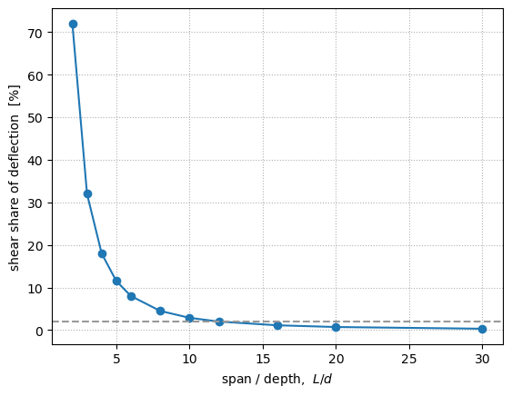
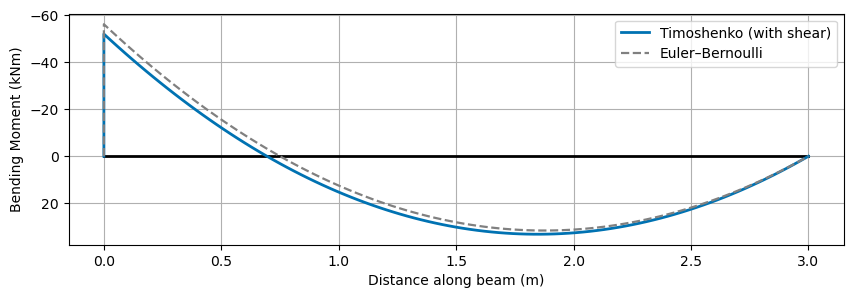
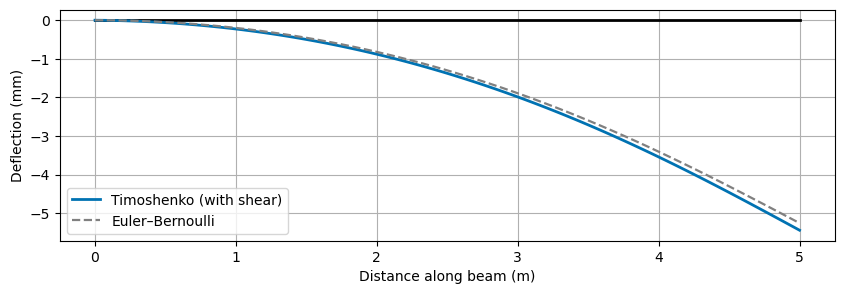

Timoshenko (Shear-Deformable) Beam Elements#
By default PyCBA uses Euler–Bernoulli beam theory: plane sections stay normal to the neutral axis, so the deflection comes from bending alone. This is an excellent idealisation for slender members, but for deep or short members — transfer beams, deep voided slabs, short spans — the transverse shear deformation is no longer negligible.
A Timoshenko element adds that shear deformation. The cross section is allowed to rotate independently of the beam axis, and the difference between the axis slope and the section rotation is the shear strain \(\gamma = V/GA_v\), where \(GA_v\) is the transverse shear rigidity (\(A_v = kA\) is the shear area and \(k\) the section shear coefficient).
In PyCBA you opt in per member simply by supplying a finite GAv:
GAv=None(the default) → the exact Euler–Bernoulli element, unchanged.a finite
GAv(a scalar, or aSectionEIfor a variable \(GA_v(x)\)) → a shear-deformable Timoshenko element.
Everything else — two DOF per node, the supports= API, reactions, plotting, influence lines — is inherited unchanged. See the Theoretical Basis page for the formulation.
[1]:
%matplotlib inline
import numpy as np
import matplotlib.pyplot as plt
import pycba as cba
Example 1 — A simply-supported deep beam#
Consider a stocky rectangular concrete beam: \(E = 30\,\mathrm{GPa}\), \(b = 0.3\,\mathrm{m}\), \(d = 1.0\,\mathrm{m}\), on a span \(L = 5\,\mathrm{m}\) (span/depth \(= 5\)). For a rectangle the shear coefficient is \(k = 5/6\), so the shear area is \(A_v = \tfrac{5}{6}A\) and the shear rigidity is \(GA_v = G A_v\) with \(G = E / 2(1+\nu)\).
We work in consistent units of kN and m throughout.
[2]:
E = 30.0e6 # kN/m^2 (30 GPa)
nu = 0.2
G = E / (2 * (1 + nu))
b, d = 0.3, 1.0 # m (a deep section)
L = 5.0 # m span (span/depth = 5)
I = b * d**3 / 12 # m^4
A = b * d # m^2
k = 5.0 / 6.0 # rectangular shear coefficient
Av = k * A # shear area
EI = E * I # flexural rigidity
GAv = G * Av # shear rigidity
Phi = 12 * EI / (GAv * L**2)
print(f"EI = {EI:.4g} kN.m^2")
print(f"GAv = {GAv:.4g} kN")
print(f"shear parameter Phi = 12 EI / (GAv L^2) = {Phi:.4f}")
EI = 7.5e+05 kN.m^2
GAv = 3.125e+06 kN
shear parameter Phi = 12 EI / (GAv L^2) = 0.1152
A central point load \(P\) on a simply-supported span has the closed-form midspan deflection
We build the beam twice — once Euler–Bernoulli, once Timoshenko (GAv=...) — and compare against this analytic result.
[3]:
P = 100.0 # kN
def ss_midspan(GAv=None):
# pinned-pinned single span: [v, theta] per node, vertical held, rotation free
ba = cba.BeamAnalysis([L], EI, [-1, 0, -1, 0], GAv=GAv)
ba.add_pl(1, P, L / 2)
ba.analyze(npts=500)
return ba.beam_results.results.D.min()
d_eb = ss_midspan(None)
d_ti = ss_midspan(GAv)
analytic_eb = -(P * L**3 / (48 * EI))
analytic_ti = -(P * L**3 / (48 * EI) + P * L / (4 * GAv))
print(f"Euler-Bernoulli midspan: {d_eb*1e3:8.4f} mm (analytic {analytic_eb*1e3:8.4f} mm)")
print(f"Timoshenko midspan: {d_ti*1e3:8.4f} mm (analytic {analytic_ti*1e3:8.4f} mm)")
print(f"shear adds {100*(d_ti-d_eb)/d_eb:5.1f}% to the deflection (~ Phi = {100*Phi:.1f}%)")
Euler-Bernoulli midspan: -0.3472 mm (analytic -0.3472 mm)
Timoshenko midspan: -0.3872 mm (analytic -0.3872 mm)
shear adds 11.5% to the deflection (~ Phi = 11.5%)
The shear deflection adds about \(\Phi \approx 11\%\) for this deep beam, and the Timoshenko result matches the textbook closed form. For a slender beam (\(GA_v\) large, \(\Phi \to 0\)) the two coincide.
Example 2 — When does shear matter? Span/depth sweep#
The shear share of the deflection is set by \(\Phi = 12EI/(GA_vL^2)\); for a rectangular section this works out to \(\tfrac{12}{5}(1+\nu)\,(d/L)^2\), so it is governed by the span-to-depth ratio and falls off as \((d/L)^2\). Sweeping \(L/d\) for our section makes the trend concrete (the dashed line marks 2 %):
[4]:
ratios = [2, 3, 4, 5, 6, 8, 10, 12, 16, 20, 30]
extra = []
for r in ratios:
Lr = r * d
eb = cba.BeamAnalysis([Lr], EI, [-1, 0, -1, 0])
eb.add_pl(1, P, Lr / 2); eb.analyze()
ti = cba.BeamAnalysis([Lr], EI, [-1, 0, -1, 0], GAv=GAv)
ti.add_pl(1, P, Lr / 2); ti.analyze()
de = eb.beam_results.results.D.min()
dt = ti.beam_results.results.D.min()
extra.append(100 * (dt - de) / de)
fig, ax = plt.subplots()
ax.plot(ratios, extra, "o-")
ax.axhline(2, ls="--", color="0.6") # 2% guide
ax.set_xlabel("span / depth, $L/d$")
ax.set_ylabel("shear share of deflection [%]")
ax.grid(True, ls=":");

For deep or short members (\(L/d \lesssim 8\)) shear adds a large fraction of the deflection; for slender members (\(L/d \gtrsim 20\)) it drops below a couple of percent. That is why the Euler–Bernoulli default is appropriate for ordinary girders, while the shear-deformable element is the right tool for deep beams, transfer beams and short spans.
Example 3 — Shear redistributes moments#
Shear flexibility does not only add deflection — in an indeterminate member it changes how moments are distributed. For a propped cantilever (fixed–pinned) under a UDL the clamping moment is
which reduces to the familiar Euler–Bernoulli \(wL^2/8\) as \(\Phi \to 0\) but is relaxed by shear as \(\Phi\) grows. We take a deep beam here (span/depth 3, \(\Phi \approx 0.32\)) so the effect is visible, and overlay the two bending-moment diagrams with PyCBA’s plot_bmd (which draws the BMD sagging-positive, with the y-axis inverted in the usual structural convention).
[5]:
Ld = 3.0 * d # a deep beam: span/depth = 3 (so shear's effect on M shows)
w = 50.0 # kN/m
eb3 = cba.BeamAnalysis([Ld], EI, [-1, -1, -1, 0]) # propped cantilever
eb3.add_udl(1, w); eb3.analyze()
ti3 = cba.BeamAnalysis([Ld], EI, [-1, -1, -1, 0], GAv=GAv)
ti3.add_udl(1, w); ti3.analyze()
me, mt = eb3.beam_results.results.M, ti3.beam_results.results.M
print(f"clamp moment relaxes from {me[np.abs(me).argmax()]:.1f} to "
f"{mt[np.abs(mt).argmax()]:.1f} kN.m (Phi = {12 * EI / (GAv * Ld**2):.2f})")
# overlay the two bending-moment diagrams on one axis
ax = ti3.plot_bmd(color="#0072B2", lw=2, label="Timoshenko (with shear)")
eb3.plot_bmd(ax=ax, color="0.5", ls="--", lw=1.6, label="Euler–Bernoulli")
ax.legend();
clamp moment relaxes from -56.2 to -52.1 kN.m (Phi = 0.32)

Example 4 — Variable shear rigidity and non-prismatic members#
GAv accepts a SectionEI to describe a shear rigidity \(GA_v(x)\) that varies along the member, exactly as EI does — and the two can be combined for a member that is both non-prismatic and shear-deformable. Here a member tapers in depth, so both \(EI(x)\) and \(GA_v(x)\) vary along the span; we overlay the deflected shapes with and without shear using plot_dsd.
[6]:
from pycba import SectionEI
# Linearly tapering depth d(x): 1.2 m at the support down to 0.6 m at the tip.
# EI ~ d^3 and GAv ~ d.
d0, d1 = 1.2, 0.6
GAv0, GAv1 = G * k * b * d0, G * k * b * d1
sec_EI = SectionEI([("poly", [0.0, L], lambda x: E * b * (d0 + (d1 - d0) * x / L)**3 / 12)])
sec_GAv = SectionEI([("linear", [0.0, L], [GAv0, GAv1])])
eb4 = cba.BeamAnalysis([L], sec_EI, [-1, -1, 0, 0]) # tapered cantilever
eb4.add_pl(1, P, L); eb4.analyze()
ti4 = cba.BeamAnalysis([L], sec_EI, [-1, -1, 0, 0], GAv=sec_GAv) # + shear
ti4.add_pl(1, P, L); ti4.analyze()
te, tt = eb4.beam_results.results.D.min(), ti4.beam_results.results.D.min()
print(f"tip deflection: E-B {te*1e3:.2f} mm -> Timoshenko {tt*1e3:.2f} mm"
f" (+{100 * (tt / te - 1):.1f}% from shear)")
# overlay the deflected shapes with PyCBA's plot_dsd
ax = ti4.plot_dsd(color="#0072B2", lw=2, label="Timoshenko (with shear)")
eb4.plot_dsd(ax=ax, color="0.5", ls="--", lw=1.6, label="Euler–Bernoulli")
ax.legend();
tip deflection: E-B -5.26 mm -> Timoshenko -5.44 mm (+3.5% from shear)

Getting \(GA_v\) for a real section#
The shear rigidity is \(GA_v = G\,A_v\) with \(A_v = kA\). The shear coefficient \(k\) depends on the cross-section shape:
Section |
shear coefficient \(k\) |
|---|---|
rectangle |
\(5/6 \approx 0.833\) |
solid circle |
\(0.9\) |
thin-walled tube |
\(0.5\) |
I-section (strong axis) |
\(\approx A / A_\text{web}\) |
For an arbitrary section, the sectionproperties package computes the shear areas directly from a warping analysis:
# sketch (requires the `sectionproperties` package)
from sectionproperties.analysis import Section
sec.calculate_geometric_properties()
sec.calculate_warping_properties()
Av_x, Av_y = sec.get_as() # shear areas about each axis
GAv = G * Av_y # transverse shear rigidity for bending
Pass the resulting GAv to BeamAnalysis(..., GAv=GAv) (or add_span) and the member is analysed as a Timoshenko element.
Summary#
Supply a finite ``GAv`` to make any member shear-deformable; leave it
Nonefor the exact Euler–Bernoulli element.Shear adds deflection (\(\sim\Phi = 12EI/GA_vL^2\)) and relaxes the moments of indeterminate members — significant for deep/short members, negligible for slender ones.
GAvworks for prismatic and non-prismatic members and all support/release types, and is inherited by the bridge and influence-line tools. The nonlinear (plastic-hinge) engine remains Euler–Bernoulli.